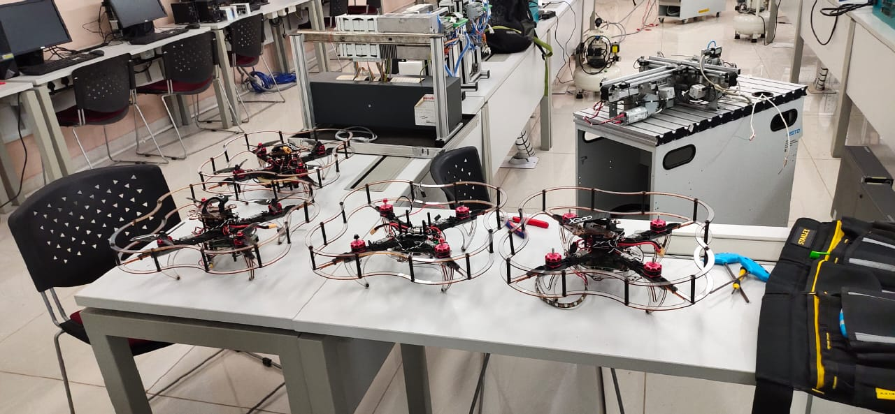

In our major project called “Multi-Disciplinary Study on Drones”, we are trying to use new technology in drones to find an alternative and effective solution over various problems existing in Farming, Agriculture, Surveillance, Delivery and Structural Analysis and is divided into three phases viz, phase I,II and III. Phase I deals with the working, flight testing and hardware components installed into the simulated drones. Phase II talks about the documentation study which will include reading research papers, geographical study about the landforms and various other studies.In phase III, project culmination will take place in which hardware work and documentation studies clubbed toether will lead to ground work and hence project completion.
Firstly, our aim was to create a vehicle which is independent of route for movement and can perform some autonomous task based on data collected via simulator and sensors. We came to know about different electronic parts like Raspberry pi, Flight Controller, Sensors, e.t c. which can be used as a single unit through interconnected network of wires and messages. Then, we built a drone and performed test flight manually and it was successful. After which we read various research papers on crop disease detection and collected some training data from the internet for 38 different types of plants/crops and then using programming algorithm in different platforms like Python, CSS and DNN and machine learning, we generated a predictor which compares the training data provided to it. Using the predictor we performed the dry run of the code and it was 80% accurate which is a quite good accuracy. Now task at our hand is to upload the training data we have in the drone code simulation platform and perform a test flight in an open field for real time crop disease detection in the 8th semester.